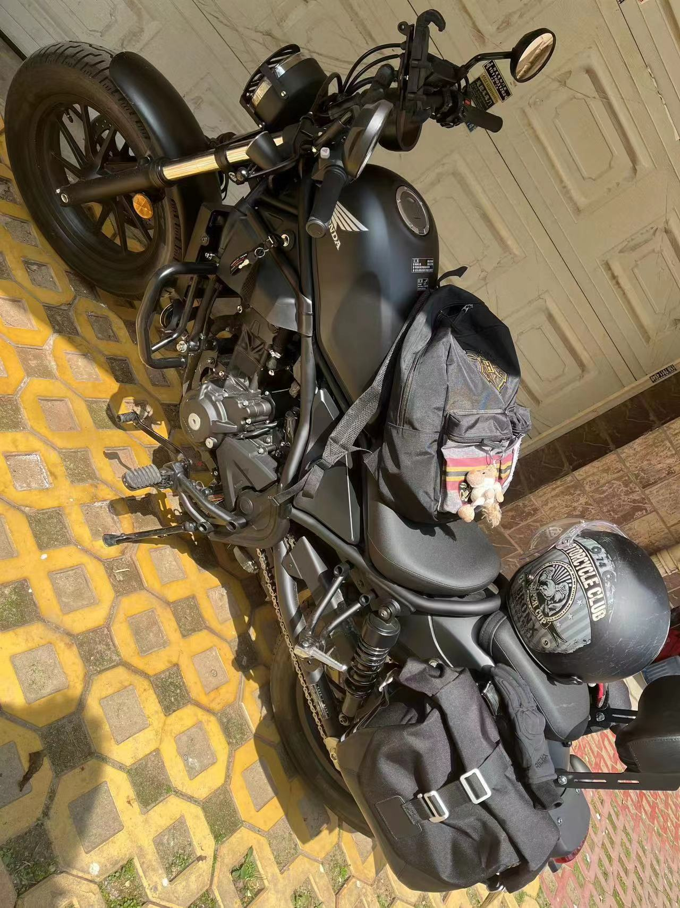
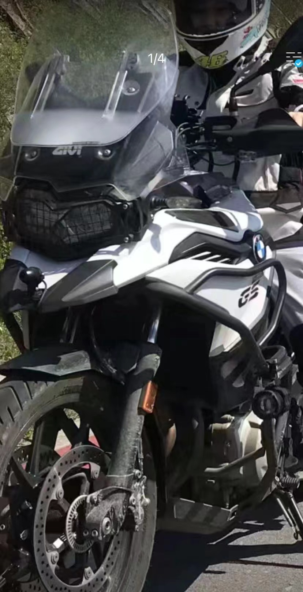
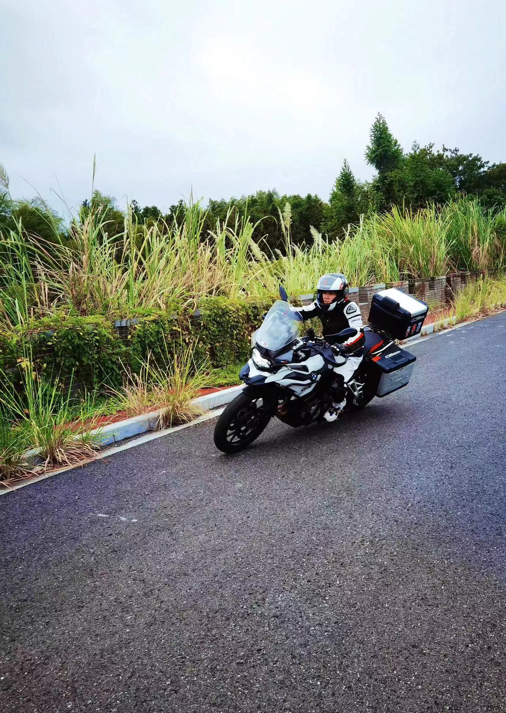

摩托车
| 名称 |
摩托车 |
| 种类 |
基本概念 |
| 产生 |
| 基本组成 |
| 常见故障 |
基本概念
[motorcycle] 两轮或三轮排列的内燃机车，有一个或两个乘用的鞍形座。
一种灵便快速的交通工具，也用于军事和体育竞赛。装有内燃发动机。有两轮和三轮摩托车。
产生
1885年，德国人戈特利伯·戴姆勒将一台发动机安装到了一台框架的机器中，世界上第一台摩托车诞生了。
与摩托车相关的摩托车运动则是一种军事体育项目，是以摩托车为器具的一种竞技运动，分两轮和三轮两种车型，每种车型按发动机汽缸工作容积分若干等级。
按竞赛形式可分为越野赛、多日赛、公路赛、场地赛和旅行赛等项目。
以行驶速度或驾驶技巧评定名次。
基本组成
摩托车发动机的特点
（1）发动机为二冲程或四冲程汽油机。
（2）采用风冷冷却，有自然风冷与强制风冷两种。一般机型采用依靠行驶中空气吹过气缸盖、气缸套上散热片带走热量的自然风冷冷却方式。大功率摩托车发动机为了保证车速较低与未起步行驶前发动机的冷却，采用装风扇和导风罩、利用强制导入的空气吹冷散热片的强制风冷冷却方式。
（3）发动机的转速高，一般在5000转/分以上。升功率（每升发动机排量所发出的有效功率）大，一般在60千瓦/升左右。这说明摩托车发动机的强化程度高，发动机外形尺寸小。
（4）发动机曲轴箱与离合器、变速箱设计一体，结构紧凑。
常见故障
故障分析
1、排气管冒蓝烟
冒蓝烟的故障现象是：发动机工作过程中，在排气消声器的尾部经常可见淡蓝色烟雾，并有机油消耗过快的现象。故障的原因可能是：机油油面过高；汽缸压缩压力低于规定值；活塞、活塞与汽缸筒的间隙增大。
2、排气管冒黑烟
冒黑烟的故障现象是：发动机工作时，排气管冒黑烟，并能嗅到刺鼻的汽油味，加速时较明显。故障的原因可能是：混合气过浓；火花塞工作不良；点火过迟。
3、排气管冒白烟
冒白烟原故障现象是：发动机工作时，排气管冒白色烟雾。故障的原因可能是：燃油中含有水分；汽缸或消声器中有水分。



青黛
别名靛花，性寒、味咸。
有清热解毒，凉血，定惊之功效。